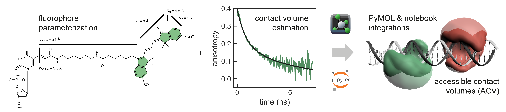

FRETraj - Predicting FRET in silico¶
FRETraj is a high-level Python API to the LabelLib library (https://github.com/Fluorescence-Tools/LabelLib) to simulate fluorophores which are coupled to a biomolecule of interest. The package features a user-friendly PyMOL plugin 1 which can be used to explore different labeling positions while designing new FRET experiments. In an AV simulation the fluorophore distribution is estimated by a shortest path search (Djikstra algorithm) using a coarse-grained dye probe. FRETraj further implements a Python-only version of the geometrical clash search used in LabelLib. This should facilitate prototyping of new features for the ACV algorithm.
{kind=link}
Plugin Installation¶
You can get the latest version of PyMOL from Schrödinger. Start the Anaconda prompt which comes bundled with PyMOL 2.x and install the necessary dependencies.
conda install numpy "numba<=0.44" mdtraj packaging -c conda-forge
For a faster calculation of the AVs you may additionally install LabelLib, but this is not required as FRETraj also runs its own implementation of the AV algorithm.
conda install -c tpeulen labellib
To use the FRETraj PyMOL plugin simply download the .zip archive from Github and install it via PyMOL’s Plugin manager: Plugin → Plugin manager → Install New Plugin → Choose file... and select the .zip archive. Upon first startup FRETraj will prompt you to select a root directory where to store the calculated ACVs and parameter files. You can load a demo project by going to Help → Load Example. You may also want to have a look at this step-by-step tutorial.


- 1
PyMOL is a trademark of Schrodinger, LLC.